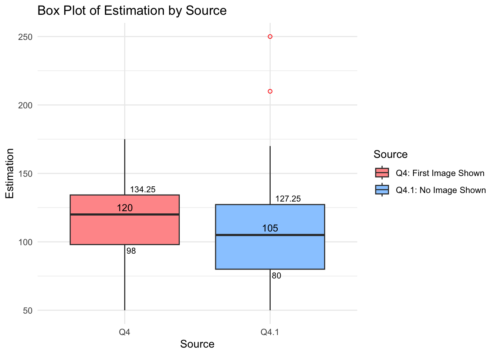
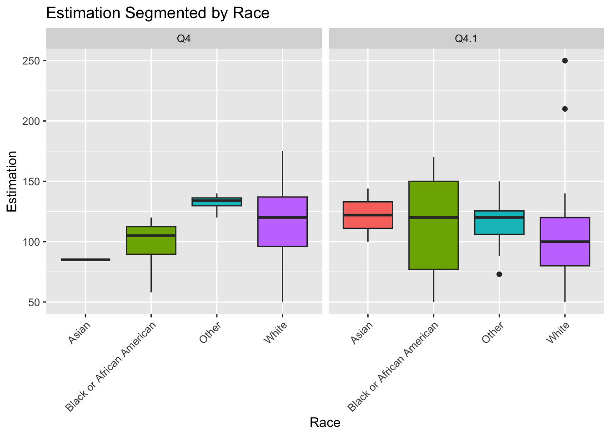
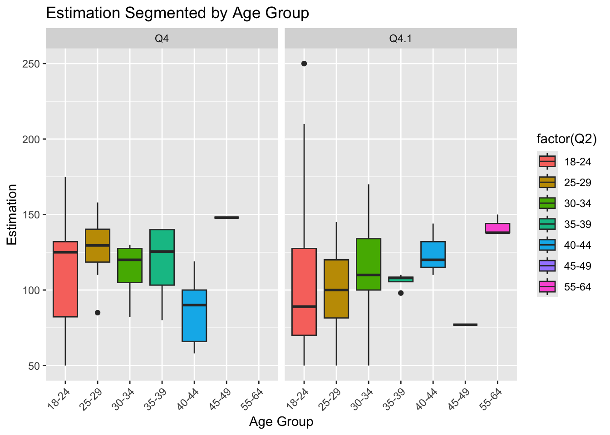
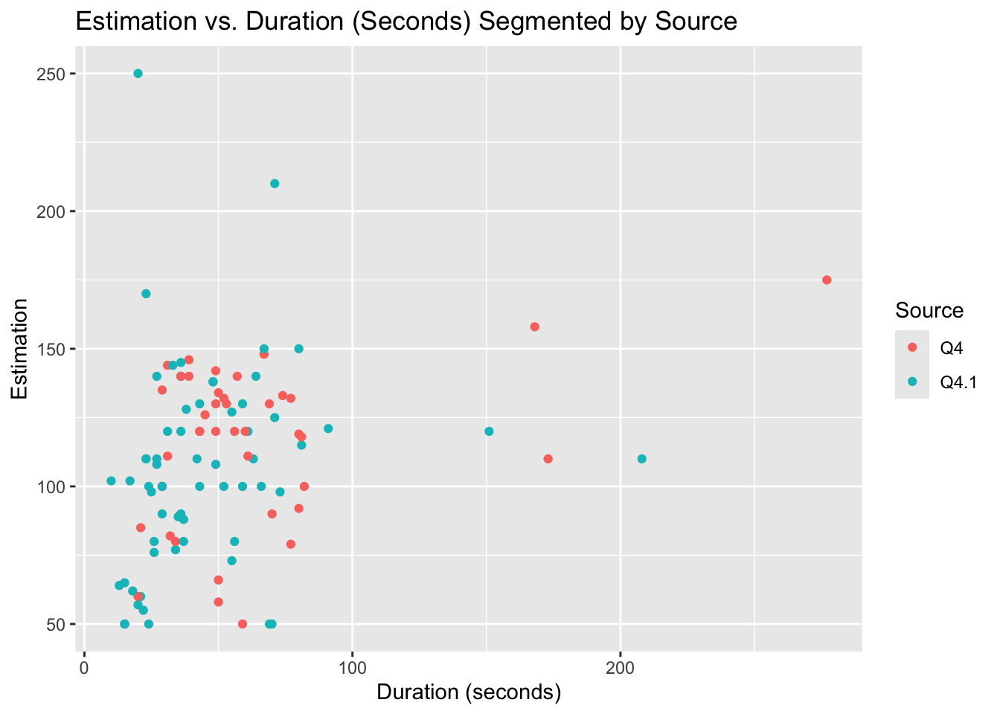
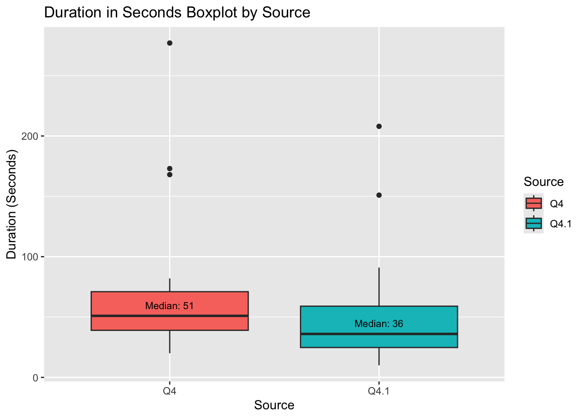

# Merge the datasets based on the common column "custom_id_prolific"merged_data <-merge(study_data_cleaned, demographic_data_cleaned, by ="Custom_id_prolific", all.x =TRUE)# all.x = TRUE will keep all rows from study_data_cleaned even if there is no match in demographic_data_cleaned# If you want to keep all rows from demographic_data_cleaned, use all.y = TRUE instead.# View the merged datasethead(merged_data)
Custom_id_prolific StartDate EndDate Q2
1 1 4/23/24 9:35:14.000 4/23/24 9:35:43.000 25-29
2 2 4/23/24 9:35:18.000 4/23/24 9:36:01.000 30-34
3 3 4/23/24 9:35:18.000 4/23/24 9:36:18.000 25-29
4 4 4/23/24 9:35:23.000 4/23/24 9:36:23.000 18-24
5 5 4/23/24 9:35:35.000 4/23/24 9:36:25.000 25-29
6 6 4/23/24 9:35:33.000 4/23/24 9:36:26.000 18-24
IPAddress Duration..in.seconds. Finished RecordedDate ResponseId
1 88.17.108.152 29 True 4/23/24 9:35 R_5qo4tc0adMmoQo1
2 77.49.58.232 43 True 4/23/24 9:36 R_7Hh8Ny7LOLwcDIq
3 195.117.148.5 59 True 4/23/24 9:36 R_7sdGtEMij5bSmIE
4 217.201.157.186 59 True 4/23/24 9:36 R_3LtcBQRGF14UBT4
5 89.64.8.159 49 True 4/23/24 9:36 R_5iqeAm4TDlWCwlC
6 99.251.73.80 52 True 4/23/24 9:36 R_3rdbBb5qVJ1WuIu
RecipientLastName RecipientFirstName RecipientEmail ExternalReference
1 NA NA NA NA
2 NA NA NA NA
3 NA NA NA NA
4 NA NA NA NA
5 NA NA NA NA
6 NA NA NA NA
LocationLatitude LocationLongitude DistributionChannel UserLanguage X Q3
1 39.4923 -0.4046 anonymous EN NA White
2 37.9842 23.7353 anonymous EN NA White
3 51.5926 18.7353 anonymous EN NA White
4 45.0914 7.6639 anonymous EN NA White
5 53.1215 18.0131 anonymous EN NA White
6 43.4325 -80.4995 anonymous EN NA White
Q3_5_TEXT Q4 Q4.1 Submission_id Participant_id Status
1 NA 90 6627d5291046a8ea6c35cf59 5eba829dede045022d3b4fa1 APPROVED
2 120 NA 6627d534e10a99b723e7bac6 60784313b07c7303c87b1a22 APPROVED
3 NA 130 6627d530da2eda7eb1adc44e 5e55be4de8fabb5c5550d54f APPROVED
4 NA 100 6627d53482fffcf9150181de 5e82537a0bf5f30abb81528a APPROVED
5 142 NA 6627d53e3b38f4685e85da9c 5f2a6a7726309f26ba44e7a2 APPROVED
6 132 NA 6627d53f0fdec0d5c75002e8 610306546b1956445387be5f APPROVED
Custom.study.tncs.accepted.at Started_time
1 Not Applicable 2024-04-23T15:35:12.132000Z
2 Not Applicable 2024-04-23T15:35:16.013000Z
3 Not Applicable 2024-04-23T15:35:16.895000Z
4 Not Applicable 2024-04-23T15:35:22.230000Z
5 Not Applicable 2024-04-23T15:35:30.694000Z
6 Not Applicable 2024-04-23T15:35:31.474000Z
Completed_time Reviewed_time
1 2024-04-23T15:36:02.148000Z 2024-04-23T16:11:28.952000Z
2 2024-04-23T15:36:23.114000Z 2024-04-23T16:11:32.697000Z
3 2024-04-23T15:36:44.115000Z 2024-04-23T16:12:57.762000Z
4 2024-04-23T15:36:32.418000Z 2024-04-23T16:13:00.044000Z
5 2024-04-23T15:37:13.532000Z 2024-04-23T16:13:00.752000Z
6 2024-04-23T15:36:37.869000Z 2024-04-23T16:13:01.767000Z
Archieve_time Time_taken Total_Prolific_approvals Age
1 2024-04-23T15:36:02.525572Z 51 204 27
2 2024-04-23T15:36:23.640226Z 68 373 32
3 2024-04-23T15:36:44.594485Z 88 479 27
4 2024-04-23T15:36:32.927338Z 71 283 24
5 2024-04-23T15:37:14.203759Z 103 39 29
6 2024-04-23T15:36:38.679657Z 67 766 22
Sex Ethnicity Birth_country Residency_country Nationality
1 Male White Spain Spain Spain
2 Male White Greece Greece Greece
3 DATA_EXPIRED DATA_EXPIRED DATA_EXPIRED Poland DATA_EXPIRED
4 Female White Italy Italy Italy
5 DATA_EXPIRED DATA_EXPIRED DATA_EXPIRED Poland DATA_EXPIRED
6 Female White Canada Canada Canada
Language Student_status Employment_status
1 Spanish DATA_EXPIRED DATA_EXPIRED
2 Greek DATA_EXPIRED DATA_EXPIRED
3 DATA_EXPIRED DATA_EXPIRED DATA_EXPIRED
4 Italian Yes Part-Time
5 DATA_EXPIRED DATA_EXPIRED DATA_EXPIRED
6 English Yes Full-Time
all_data <-read.csv("data/merged_data.csv")
#create 2 datasets based on each questionq4_data <- all_data[!is.na(all_data$Q4) &is.na(all_data$Q4.1), ]# Subset rows where Q4.1 has values and Q4 is NAq4.1_data <- all_data[is.na(all_data$Q4) &!is.na(all_data$Q4.1), ]# For Q4_dataq4_data <-mutate(q4_data, difference = Q4 -119)# For Q4.1_dataq4.1_data <-mutate(q4.1_data, difference = Q4.1-119)
#Generating statistics # For Q4_datamean_estimation_Q4_data <-mean(q4_data$Q4, na.rm =TRUE)cat("Mean of estimation column for Q4_data:", mean_estimation_Q4_data, "\n")
Mean of estimation column for Q4_data: 115.65
mean_difference_Q4_data <-mean(q4_data$difference, na.rm =TRUE)cat("Mean of difference column for Q4_data:", mean_difference_Q4_data, "\n")
Mean of difference column for Q4_data: -3.35
# For Q4.1_datamean_estimation_Q4.1_data <-mean(q4.1_data$Q4.1, na.rm =TRUE)cat("Mean of estimation column for Q4_data:", mean_estimation_Q4.1_data, "\n")
Mean of estimation column for Q4_data: 106.6094
mean_difference_Q4.1_data <-mean(q4.1_data$difference, na.rm =TRUE)cat("Mean of difference column for Q4.1_data:", mean_difference_Q4.1_data, "\n")
Mean of difference column for Q4.1_data: -12.39062
# Calculate the sum for Q4_datasum_Q4_data <-sum(q4_data$Q4, na.rm =TRUE)cat("Sum of values for Q4 column in Q4_data:", sum_Q4_data, "\n")
Sum of values for Q4 column in Q4_data: 4626
# Calculate the sum for Q4.1_datasum_Q4.1_data <-sum(q4.1_data$Q4.1, na.rm =TRUE)cat("Sum of values for Q4.1 column in Q4.1_data:", sum_Q4.1_data, "\n")
Sum of values for Q4.1 column in Q4.1_data: 6823
library(dplyr)# Assuming your dataset is named merged_datamerged_data <- merged_data %>%filter(!is.na(Custom_id_prolific))estimation_data <- merged_data %>%mutate(Estimation =coalesce(Q4, Q4.1), # coalesce will pick the first non-NA valueSource =case_when(!is.na(Q4) ~"Q4", # If Q4 is not NA, then Source is 'Q4'!is.na(Q4.1) ~"Q4.1"# If Q4.1 is not NA, then Source is 'Q4.1' ) )# View the first few rows of the modified dataframehead(estimation_data)
Custom_id_prolific StartDate EndDate Q2
1 1 4/23/24 9:35:14.000 4/23/24 9:35:43.000 25-29
2 2 4/23/24 9:35:18.000 4/23/24 9:36:01.000 30-34
3 3 4/23/24 9:35:18.000 4/23/24 9:36:18.000 25-29
4 4 4/23/24 9:35:23.000 4/23/24 9:36:23.000 18-24
5 5 4/23/24 9:35:35.000 4/23/24 9:36:25.000 25-29
6 6 4/23/24 9:35:33.000 4/23/24 9:36:26.000 18-24
IPAddress Duration..in.seconds. Finished RecordedDate ResponseId
1 88.17.108.152 29 True 4/23/24 9:35 R_5qo4tc0adMmoQo1
2 77.49.58.232 43 True 4/23/24 9:36 R_7Hh8Ny7LOLwcDIq
3 195.117.148.5 59 True 4/23/24 9:36 R_7sdGtEMij5bSmIE
4 217.201.157.186 59 True 4/23/24 9:36 R_3LtcBQRGF14UBT4
5 89.64.8.159 49 True 4/23/24 9:36 R_5iqeAm4TDlWCwlC
6 99.251.73.80 52 True 4/23/24 9:36 R_3rdbBb5qVJ1WuIu
RecipientLastName RecipientFirstName RecipientEmail ExternalReference
1 NA NA NA NA
2 NA NA NA NA
3 NA NA NA NA
4 NA NA NA NA
5 NA NA NA NA
6 NA NA NA NA
LocationLatitude LocationLongitude DistributionChannel UserLanguage X Q3
1 39.4923 -0.4046 anonymous EN NA White
2 37.9842 23.7353 anonymous EN NA White
3 51.5926 18.7353 anonymous EN NA White
4 45.0914 7.6639 anonymous EN NA White
5 53.1215 18.0131 anonymous EN NA White
6 43.4325 -80.4995 anonymous EN NA White
Q3_5_TEXT Q4 Q4.1 Submission_id Participant_id Status
1 NA 90 6627d5291046a8ea6c35cf59 5eba829dede045022d3b4fa1 APPROVED
2 120 NA 6627d534e10a99b723e7bac6 60784313b07c7303c87b1a22 APPROVED
3 NA 130 6627d530da2eda7eb1adc44e 5e55be4de8fabb5c5550d54f APPROVED
4 NA 100 6627d53482fffcf9150181de 5e82537a0bf5f30abb81528a APPROVED
5 142 NA 6627d53e3b38f4685e85da9c 5f2a6a7726309f26ba44e7a2 APPROVED
6 132 NA 6627d53f0fdec0d5c75002e8 610306546b1956445387be5f APPROVED
Custom.study.tncs.accepted.at Started_time
1 Not Applicable 2024-04-23T15:35:12.132000Z
2 Not Applicable 2024-04-23T15:35:16.013000Z
3 Not Applicable 2024-04-23T15:35:16.895000Z
4 Not Applicable 2024-04-23T15:35:22.230000Z
5 Not Applicable 2024-04-23T15:35:30.694000Z
6 Not Applicable 2024-04-23T15:35:31.474000Z
Completed_time Reviewed_time
1 2024-04-23T15:36:02.148000Z 2024-04-23T16:11:28.952000Z
2 2024-04-23T15:36:23.114000Z 2024-04-23T16:11:32.697000Z
3 2024-04-23T15:36:44.115000Z 2024-04-23T16:12:57.762000Z
4 2024-04-23T15:36:32.418000Z 2024-04-23T16:13:00.044000Z
5 2024-04-23T15:37:13.532000Z 2024-04-23T16:13:00.752000Z
6 2024-04-23T15:36:37.869000Z 2024-04-23T16:13:01.767000Z
Archieve_time Time_taken Total_Prolific_approvals Age
1 2024-04-23T15:36:02.525572Z 51 204 27
2 2024-04-23T15:36:23.640226Z 68 373 32
3 2024-04-23T15:36:44.594485Z 88 479 27
4 2024-04-23T15:36:32.927338Z 71 283 24
5 2024-04-23T15:37:14.203759Z 103 39 29
6 2024-04-23T15:36:38.679657Z 67 766 22
Sex Ethnicity Birth_country Residency_country Nationality
1 Male White Spain Spain Spain
2 Male White Greece Greece Greece
3 DATA_EXPIRED DATA_EXPIRED DATA_EXPIRED Poland DATA_EXPIRED
4 Female White Italy Italy Italy
5 DATA_EXPIRED DATA_EXPIRED DATA_EXPIRED Poland DATA_EXPIRED
6 Female White Canada Canada Canada
Language Student_status Employment_status Estimation Source
1 Spanish DATA_EXPIRED DATA_EXPIRED 90 Q4.1
2 Greek DATA_EXPIRED DATA_EXPIRED 120 Q4
3 DATA_EXPIRED DATA_EXPIRED DATA_EXPIRED 130 Q4.1
4 Italian Yes Part-Time 100 Q4.1
5 DATA_EXPIRED DATA_EXPIRED DATA_EXPIRED 142 Q4
6 English Yes Full-Time 132 Q4
# Assuming your dataset is already in your environment and named merged_datamean_estimations <- estimation_data %>%group_by(Source) %>%summarise(Mean_Estimation =mean(Estimation, na.rm =TRUE) # Calculating mean and removing any NAs )# View the resultsprint(mean_estimations)
# Base plotp <-ggplot(estimation_data, aes(x = Source, y = Estimation, fill = Source)) +geom_boxplot(outlier.colour ="red", outlier.shape =1) +# Color and shape for outlierslabs(title ="Box Plot of Estimation by Source",x ="Source",y ="Estimation") +theme_minimal() +scale_fill_manual(labels =c("Q4: First Image Shown", "Q4.1: No Image Shown"), values =c("#FF9999", "#99CCFF")) # Light red and light blue# Add median labelsp <- p +stat_summary(fun = median, geom ="text", aes(label =round(after_stat(y), 2)),position =position_dodge(width =0.75), vjust =-0.5,color ="black", size =3.5)# Add quartile labels using `geom_text` directly with a new calculation# Calculate quartiles and other stats to annotate manuallyboxplot_stats <- estimation_data %>%group_by(Source) %>%summarise(lower =quantile(Estimation, probs =0.25, na.rm =TRUE),upper =quantile(Estimation, probs =0.75, na.rm =TRUE) ) %>% tidyr::pivot_longer(-Source, names_to ="Quartile", values_to ="Value")# Add quartile labelsp <- p +geom_text(data = boxplot_stats, aes(x = Source, y = Value, label =round(Value, 2)),position =position_dodge(width =0.75), vjust =ifelse(boxplot_stats$Quartile =="lower", 1.5, -0.5), # Move lower quartile uphjust =-0.2, size =3, check_overlap =TRUE)# Print the plot with labelsprint(p)

The graphs shows that the when an anchoring photo was shown, participants estimated on average 120 marbles compared to 105 when not shown the first image. Without seeing the first image, participants had a larger spread of estimations, which included more outliers.
#create a better cleaned dataset for analysis analysis_data <- estimation_data |>select(Custom_id_prolific, Q2, Duration..in.seconds., Q3, Q3_5_TEXT, Age, Sex, Estimation, Source)
Calculating the t-test statistics of the 2 estimation groups to see if there is a significance of the anchoring effect.
with_picture_data <-filter(analysis_data, Source =="Q4") without_picture_data <-filter(analysis_data, Source =="Q4.1") mean_picture <-mean(with_picture_data$Estimation)mean_without_picture <-mean(without_picture_data$Estimation)cat("Mean estimate for the group shown the anchor (12 marbles):", mean_picture, "\n")
Mean estimate for the group shown the anchor (12 marbles): 115.65
cat("Mean estimate for the group not shown the anchor:", mean_without_picture, "\n")
Mean estimate for the group not shown the anchor: 106.6094
# Perform a t-test to compare the means of the two groupst_test_result <-t.test(with_picture_data$Estimation, without_picture_data$Estimation)# Print the t-test resultprint(t_test_result)
Welch Two Sample t-test
data: with_picture_data$Estimation and without_picture_data$Estimation
t = 1.3857, df = 97.138, p-value = 0.169
alternative hypothesis: true difference in means is not equal to 0
95 percent confidence interval:
-3.907618 21.988868
sample estimates:
mean of x mean of y
115.6500 106.6094
Based on the results of the Welch Two Sample t-test:
Mean Estimates: The mean estimate for the group shown the anchor (10 marbles) is 115.65, while the mean estimate for the group not shown the anchor is 106.6094.
T-test Result: The t-test statistic is 1.3857 with a degrees of freedom (df) of approximately 97.138. The p-value associated with this test is 0.169.
Interpretation: With a p-value of 0.169, which is greater than the conventional significance level of 0.05, we fail to reject the null hypothesis. This suggests that there is not enough evidence to conclude that the difference in means between the two groups is statistically significant at the 5% significance level.
Confidence Interval: The 95% confidence interval for the difference in means ranges from -3.907618 to 21.988868. Since this interval contains zero, it further supports the conclusion that there is no statistically significant difference in estimates between the group shown the anchor and the group not shown the anchor.
In summary, based on these results, there does not appear to be a significant anchoring effect present in the data. Participants’ estimates were not significantly influenced by whether or not they were shown the anchor of 12 marbles.
# Create a box plot with the legend removedggplot(analysis_data, aes(x = Q3, y = Estimation, fill = Q3)) +geom_boxplot() +labs(x ="Race", y ="Estimation") +ggtitle("Estimation Segmented by Race") +facet_wrap(~ Source) +theme(axis.text.x =element_text(angle =45, hjust =1)) +guides(fill =FALSE)
Warning: The `<scale>` argument of `guides()` cannot be `FALSE`. Use "none" instead as
of ggplot2 3.3.4.

There are no significant trends from this data. There were not enough datapoints per each race to gain a significant result. White people had the worst estimations while Black/African Americans had the best, but only had a few datapoints in the set.
# Assuming your dataset is named analysis_data# Define a lookup table for racerace_labels <-c("1"="Asian", "2"="Black or African American", "3"="Other", "4"="White") # Adjust the labels as per your dataset# Load necessary librarieslibrary(ggplot2)library(tibble)# Create the box plotboxplot <-ggplot(analysis_data, aes(x = Q3, y = Estimation, fill = Q3)) +geom_boxplot() +labs(x ="Race", y ="Estimation") +ggtitle("Estimation Segmented by Race") +facet_wrap(~ Source) +theme(axis.text.x =element_text(angle =45, hjust =1))# Extract the data used to create the plotplot_data <-ggplot_build(boxplot)$data# Filter the data for the boxplotsboxplot_data <- plot_data[[1]]# Organize the data into a tableboxplot_table <-as_tibble(boxplot_data)boxplot_table <- boxplot_table[, c("group", "x", "lower", "middle", "upper", "ymax", "ymin")]# Rename the columns for claritycolnames(boxplot_table) <-c("Source", "Race", "Lower Whisker", "Lower Hinge", "Median", "Upper Hinge", "Upper Whisker")# Replace numeric race values with corresponding text labelsboxplot_table$Race <- race_labels[as.character(boxplot_table$Race)]# Print the tableprint(boxplot_table)
# A tibble: 8 × 7
Source Race `Lower Whisker` `Lower Hinge` Median `Upper Hinge`
<int> <chr> <dbl> <dbl> <dbl> <dbl>
1 1 Asian 85 85 85 85
2 2 Black or African Am… 89.5 105 112. 120
3 3 Other 130. 134 136. 140
4 4 White 96 120 137 175
5 1 Asian 111 122 133 144
6 2 Black or African Am… 77 120 150 170
7 3 Other 106 120 126. 150
8 4 White 80 100 120 140
# ℹ 1 more variable: `Upper Whisker` <dbl>
# Assuming your dataset is named analysis_data# Load necessary librarieslibrary(ggplot2)# Create the box plot faceted by the "Source" column for the column "Q2" (age groups)boxplot_age <-ggplot(analysis_data, aes(x =factor(Q2), y = Estimation, fill =factor(Q2))) +geom_boxplot() +labs(x ="Age Group", y ="Estimation") +ggtitle("Estimation Segmented by Age Group") +facet_wrap(~ Source) +theme(axis.text.x =element_text(angle =45, hjust =1))# Print the box plotprint(boxplot_age)

Young people ages 18-24 when shown the first image had the worst estimations while those ages 35-39 and 40-44 were the closest when shown the first image. Ages 25-29 and 30-34 had the best estimations when they did not see the first image.
scatterplot <-ggplot(analysis_data, aes(x = Duration..in.seconds., y = Estimation, color = Source)) +geom_point() +labs(x ="Duration (seconds)", y ="Estimation") +ggtitle("Estimation vs. Duration (Seconds) Segmented by Source")# Print the scatter plotprint(scatterplot)

The time that it took participants to answer/estimate the number of marbles was roughly the same, whether or not they were shown the first image, indicating that those who saw the first image did not spend much time analyzing it.
# Assuming your dataset is named analysis_data# Load necessary librarieslibrary(ggplot2)# Create a boxplot comparing duration in seconds for each sourceboxplot_source_duration <-ggplot(analysis_data, aes(x = Source, y = Duration..in.seconds., fill = Source)) +geom_boxplot() +stat_summary(fun = median, geom ="text", aes(label =paste("Median:", round(..y.., 2))), vjust =-1, size =3, color ="black") +labs(x ="Source", y ="Duration (Seconds)", fill ="Source") +ggtitle("Duration in Seconds Boxplot by Source")# Print the boxplotprint(boxplot_source_duration)
Warning: The dot-dot notation (`..y..`) was deprecated in ggplot2 3.4.0.
ℹ Please use `after_stat(y)` instead.

When factoring in the time for the page to reload for Q4 to move to the estimation page (~7 seconds, the duration between the two groups was not significantly different and participants were not helped on their estimations by seeing the first image.
All together, the first image did not help the participants, therefore the initial thought that it would cannot be proven/there may not be a strong anchoring effect at play in this research.